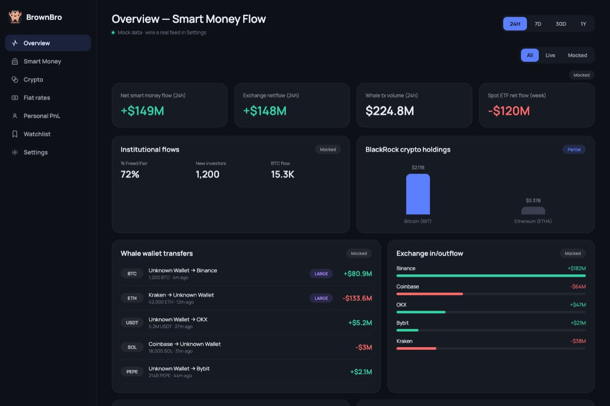
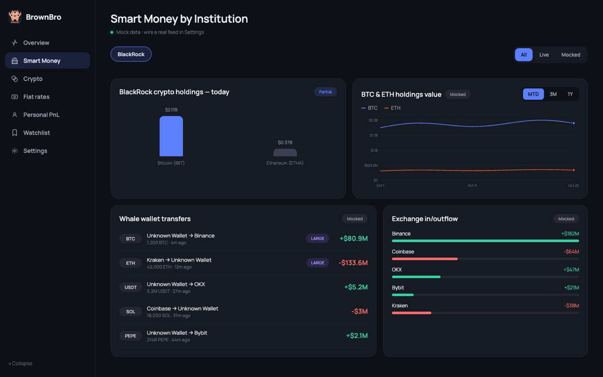
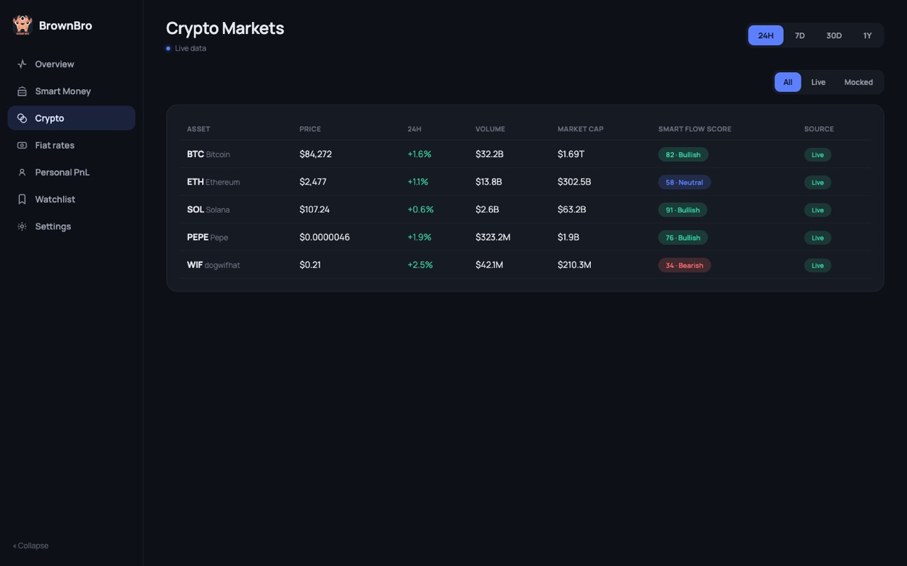
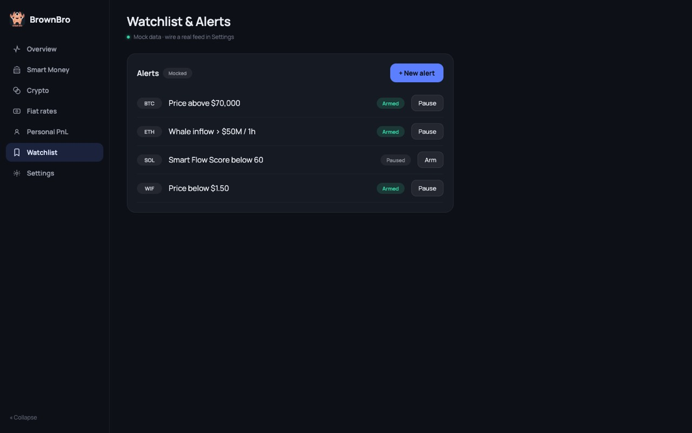
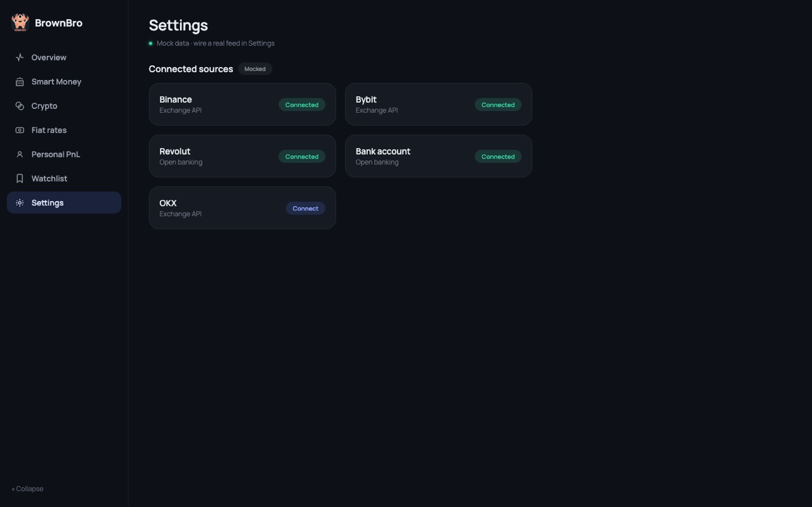

Analytics dashboard
Crypto and currency data on one dark screen.
I built BrownBro, a dashboard that shows where big money moves in crypto, what the markets do, and what banks pay for dollars, euros, zloty and hryvnia. Every number says if it is live or mocked.

What is inside
The frontend is a React app with a side menu and seven pages: Overview, Smart Money, Crypto, Fiat rates, Personal PnL, Watchlist and Settings. The data pages have a time range switch and a filter for live or mocked data.
The backend is a small Flask API. It asks public APIs for prices and rates, reads bank exchange rates from the banks' own pages, and keeps demo data for everything that has no real feed yet.
- 7 pages in the side menu
- 3 data states: live, partial and mocked
- 3 banks read for exchange rates
A look at the pages
Real screenshots from the running app. The prices on the Crypto page were live; the rest is demo data.




Live or mocked?
A dashboard with fake numbers that look real is dangerous. So each card has a small tag, and the data pages have this filter. Try it.
- BTCCrypto pricesLive
- BLKBlackRock holdingsPartial
- WHLWhale transfersMocked
- FXFiat pairsLive
- ETFSpot ETF flowsMocked
Partial cards always stay: they mix both kinds of data.
- Live
- All the data on the card came from a real API just now.
- Partial
- Some rows are live, some fell back to demo data. For example, holdings are demo numbers, but the price is real.
- Mocked
- Demo data, because there is no feed yet or the API did not answer.
Decisions I made
- The source travels with the data
-
Every API answer has an
X-Data-Sourceheader: live, partial or mock. The frontend reads it in one hook and shows the tag. Nobody has to remember which card is fake. - If an API fails, the page still works
- CoinGecko, Frankfurter and Binance are free and sometimes slow or blocked. When a call fails, the backend returns demo data and says so. For futures it falls back row by row, so one bad symbol does not hide the others.
- A tiny cache, not a database
- Prices are kept for 60 seconds and fiat rates for six hours, in memory. That is enough to stay polite to free APIs, and there is nothing to set up.
- Bank rates from the banks themselves
- Millennium and PrivatBank have public JSON. VeloBank only has a web page, so I read its table with BeautifulSoup. All three answer in the same shape: buy and sell for USD, EUR, PLN and UAH.
- Charts I drew myself
- The holdings chart is plain SVG with a hover point, and the flow bars are simple blocks. For this many points a chart library would be more code to fight than to write.
- One file for the look
- Colours and corner sizes live in one tokens file. The theme, the cards, the pills and the green/red for up and down all read from it, so the dark style stays the same on every page.
Built with React, TypeScript, Material UI and Emotion on the front, and Python, Flask, Requests and BeautifulSoup on the back.
Want something like this?
A dashboard for your own data: markets, rates, your company numbers, or a mix. Tell me what you want to see on one screen, and we talk about how to get there.